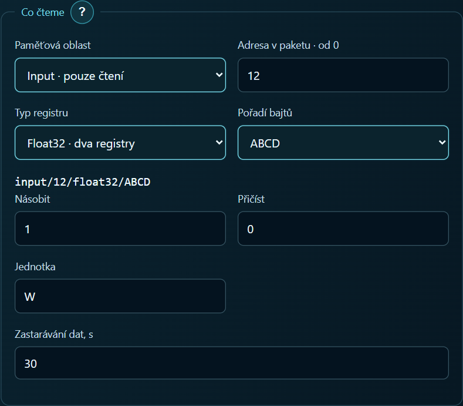

Jak zobrazit činný výkon z elektroměru Eastron na tabletu
Vedle teploty z Home Assistantu se na panel hodí i okamžitý příkon domu. V tomto příkladu použijeme elektroměr Eastron SDM120-Modbus s rozhraním RS-485, nastavenou síťovou bránu a aplikaci ARAAMA 0.1.10.
Nastavení panelu
Připojte tablet k síti brány a do aplikace zadejte její IP adresu a port. Pokud brána převádí požadavky Modbus TCP na RTU, zvolte Modbus TCP. Pokud jen přenáší nezměněné rámce RTU, zvolte RTU přes TCP. Do pole Unit ID zadejte adresu elektroměru. Brána i elektroměr musí mít na RS-485 stejnou přenosovou rychlost a paritu.
Vytvořte tag Činný výkon. V tabulce výrobce má číslo 30013 a počáteční adresu 0x000C. Do pole s adresováním od nuly zadejte 12. Vyberte vstupní registry (funkce 04), typ Float32 a pořadí ABCD, pokud brána zachovává pořadí bajtů. Hodnota ve wattech zabírá dva registry. Násobitel nastavte na 1 a posun na 0. Mapa registrů Eastron, str. 5

Přiřaďte tag číselné kartě. Na displeji elektroměru vyberte činný výkon a při stálém odběru porovnejte hodnoty. Například 0,72 kW na displeji odpovídá přibližně 720 W na tabletu. ARAAMA 0.1.10 a příručky